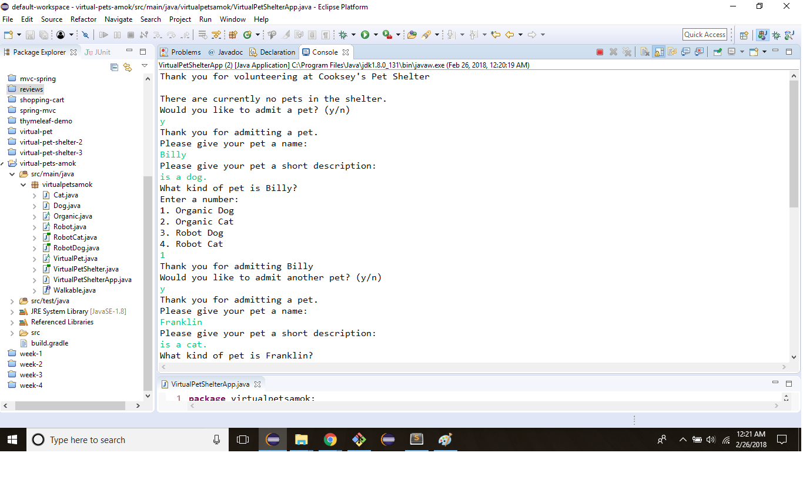
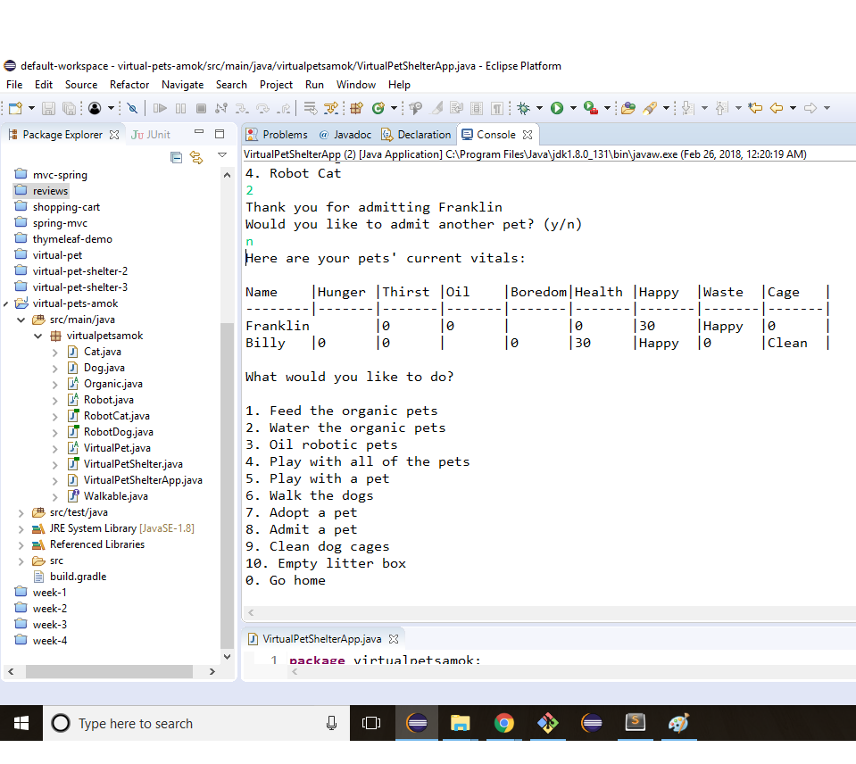
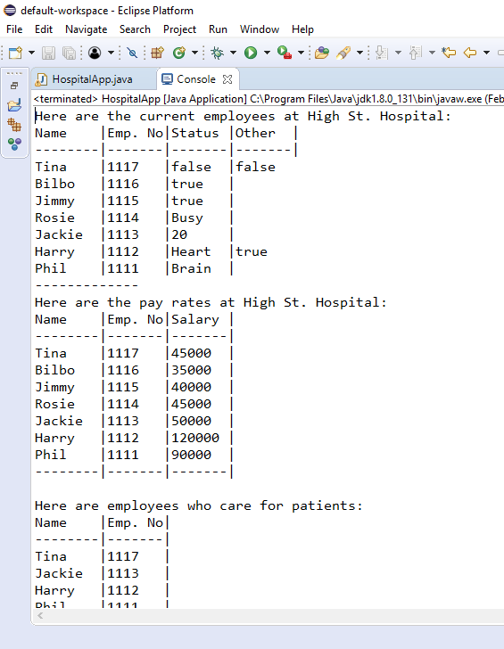

Sample curriculum of full-stack Java courses
Skills used: TDD, OOP, Java, HTML, Spring
Skills used: TDD, OOP, Java, HTML, Spring
Admit cats and dogs to the pet shelter
Choose to interact with pets from many options
Skills used: TDD, OOP, Java
Track employee information, including the responsibilities of each employee
Skills used: TDD, OOP, Java